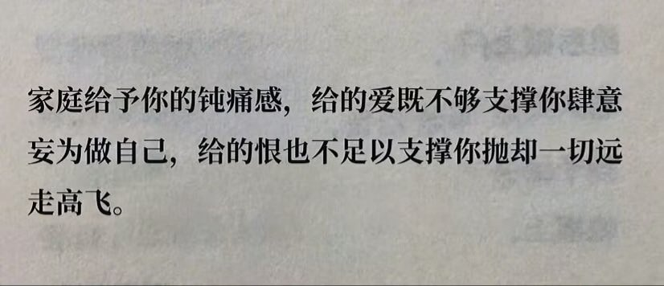

偶尔会觉得自己是幸福的，也偶尔会觉得自己是被爱的。一直到我发现身边的朋友，他们有的父母是不会吵架的，有的父母是不会打压孩子的兴趣，有的父母是不会有问题就责怪孩子的，有的父母是会尽自己所能去满足孩子的需求，也有的父母从不会因为成绩不好而贬低孩子的价值。这些不曾拥有的东西我用了很多年去跟它们和解，但我想原生家庭带来不平等的爱是一辈子都无法弥补的。我痛恨每个这样的时刻但又心疼他们劳苦的模样，这是中式父母教育的核心。亲情给我带来的负担多过温馨，牵挂和被牵挂都令我倍感压力。我没有能力妥善地接住并回报他们给我的爱，当然他们也并不是那么会爱人，有家可回当然好，但此地不宜久留，还是一个人待在自己小小的屋子里最轻松。
“外婆在海里游，妈妈在地上跑，所以我才能在天上飞。”在《苦尽甘来遇见你》中这句话深刻地敲醒我，一个被爱托举的孩子一定是需要三代人努力的结果。所以我只能自己托举自己，我现在拥有挣钱的能力是为了先满足自己的需求再去给予父母的回报，我从来都是为自己而活，而不是因为父母生我养我就该为了他们负债一辈子。我坚决不要这样的生活，我也不愿去将就我的人生，实现经济独立的我为什么不配拥有好的生活，买漂亮的衣服，好看的鞋子，吃好喝好睡好又未尝不可！
“外婆在海里游，妈妈在地上跑，所以我才能在天上飞。”在《苦尽甘来遇见你》中这句话深刻地敲醒我，一个被爱托举的孩子一定是需要三代人努力的结果。所以我只能自己托举自己，我现在拥有挣钱的能力是为了先满足自己的需求再去给予父母的回报，我从来都是为自己而活，而不是因为父母生我养我就该为了他们负债一辈子。我坚决不要这样的生活，我也不愿去将就我的人生，实现经济独立的我为什么不配拥有好的生活，买漂亮的衣服，好看的鞋子，吃好喝好睡好又未尝不可！
